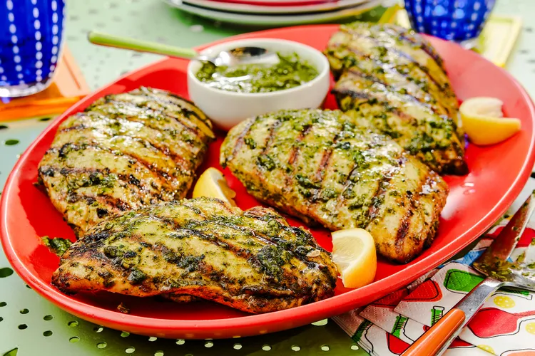

Home
Grilled Pesto Chicken

Description
This garlicky grilled pesto chicken uses fresh homemade pesto 3 ways: as a marinade, as a sauce brushed over the finished chicken, and as a dipping sauce. This juicy, bright chicken feels summery and fresh.
Ingredients
- 2 cups firmly packed fresh basil leaves, plus chopped basil for garnish
- 1/4 cup walnut halves and pieces
- 2 garlic cloves
- 1 ice cube
- 1 1/2 teaspoons kosher salt, divided
- 1/2 teaspoon lemon zest
- 2 tablespoons fresh lemon juice, divided
- 2/3 cup extra-virgin olive oil
- 3/4 ounce Parmesan cheese, grated
- 4 (8-ounce) skinless, boneless chicken breasts, pounded to 1-inch thickness
- 1/2 teaspoon freshly ground black pepper
Steps
- Gather all ingredients.
- Combine basil, walnuts, garlic, ice cube, 1/2 teaspoon salt, lemon zest, and 1 tablespoon lemon juice in a food processor. Process until very finely chopped, about 30 seconds, stopping to scrape down sides as needed. With processor running, slowly stream in oil until emulsified, about 15 seconds. Add Parmesan cheese and pulse until well combined, 3 to 4 pulses.
- Transfer 1/2 cup of the pesto into a large resealable plastic bag; add remaining 1 tablespoon lemon juice. Divide remaining 1/2 cup pesto into 2 small bowls, 1/4 cup each; cover and refrigerate until ready to use.
- Season chicken evenly with pepper and remaining 1 teaspoon salt. Add chicken to the bag with pesto; seal, and gently massage to coat. Refrigerate for at least 30 minutes or up to 4 hours.
- Remove chicken from refrigerator. Preheat an outdoor grill to medium-high heat (400 to 450 degrees F (200 to 225 degrees C)). Oil grates, place chicken on grates, and discard any excess marinade. Grill, uncovered, until grill marks form, 3 to 5 minutes. Flip chicken; grill until an instant read thermometer inserted into the thickest portion of chicken registers 160 degrees F (71 degrees C), 3 to 5 minutes.
- Transfer chicken to a cutting board. Brush top of chicken evenly with 1/4 cup reserved pesto. Loosely cover with foil and let stand 5 minutes.
- Transfer chicken to a serving platter. Serve remaining 1/4 cup pesto on the side and garnish with basil.